{kind=link}
{kind=link}
{kind=link}
{kind=link}
{kind=link}
{kind=link}
{kind=link}
{kind=link}
{kind=link}
{kind=link}
{kind=link}
{kind=link}
{kind=link}
{kind=link}
{kind=link}


Grumman F4F-4 Wildcat
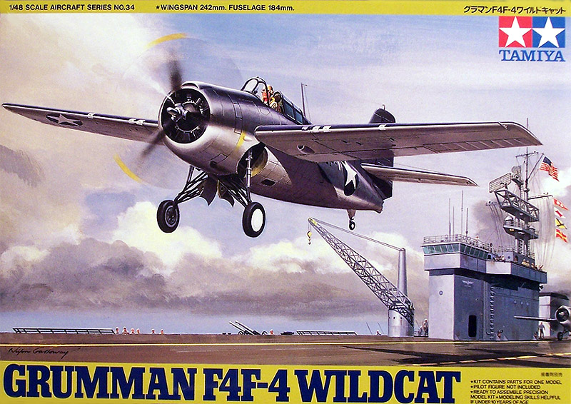
Kit #61034 MSRP $26.00
Images and text Copyright � 2005 by Matt Swan
Developmental Background
In 1936 the US Navy evaluated a number of designs, which were competing to be the Navy's new carrier-based fighter. A Grumman built design that began life as a biplane won the contract and after several design modifications became the XF4F-2. With large wings, situated well forward on the fuselage, the plane had very high lift, permitted quick take-offs, slow landings, and excellent maneuverability. After flight trials in 1937 the design was renamed F4F and orders were placed by the U.S. Navy in 1939. Oddly enough the first production aircraft off the line did not go to the Navy but went to Canada instead. These five aircraft were redesignated �Martlet Mk 1� and transferred to the Royal Navy�s Fleet Air Arm. In December of 1940 two of these planes made history when they engaged and shot down a German aircraft. This was the first documented engagement of American built aircraft against German aircraft.
It was not until the introduction of the F4F-4 version in late 1941 that the aircraft sported folding wings and acquired the �Wildcat� name. As World War 2 raged the Wildcat's reputation and utilization grew immensely. The aircraft was seeing active service with the U.S. Navy and the Marines in not only the Pacific Theater but in North Africa as well. By mid 1942 Grumman saw their production facilities being maximized with the new F6F �Hellcat� and turned production of the �Wildcat� over to the General Motors Corporation who manufactured more than 1,150 of them under license as the FM1. GM improved the design further with the addition of a taller tail and more powerful engine and built over 4,700 units designated FM-2.
The F4F could not equal the speed and maneuverability of its Japanese counterpart, the "Zero", but its rugged construction and superior armament coupled with well-trained pilots and good tactics ensured that it generally gave at least "as good as it got". In the hands of men like Butch O'Hare, Joe Foss and Marion Carl, to name a few, Grumman's stubby, rugged fighter held the line against the Zeros in the early air battles over Guadalcanal and in the 1942 carrier battles of the Coral Sea, Midway, and the Eastern Solomons.
The Kit
This is one of those �shake and bake� kits that you hear about. In other words, it is very difficult to screw this model up. Upon opening the box, we see only two large sprues of parts done in gray polystyrene and a single small sprue of clear parts. Just because there are not many parts does not mean that this is not a nice kit, it is very nice. The cockpit is fairly well detailed with the seat being the only serious weak point. The kit floor pan is cast as a solid piece rather than an open piece but this could be easily remedied. The parts are all clean and free of flash, injector pins and sink holes. The exterior pieces feature both raised and recessed detail. There have been some complaints by other modelers that the rivet detail is overdone and there may be some validity to that but I did not find it to be that bad.
All the flight control surfaces and flaps are molded in the neutral or closed position. We have two drop tanks that can be installed on hard points. The landing gear bays are well detailed and this extends to the backside of the firewall. The kit provides the canopy in sections allowing it to be modeled open or closed. Taking a look at the parts count we have only 51 gray injection molded parts and 7 clear parts for a total of 58 pieces in the box.
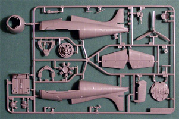
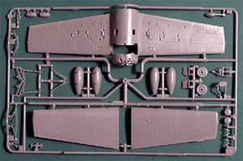
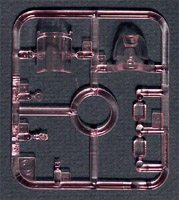
You may click on the images above to view larger pictures.
Decals and Instructions
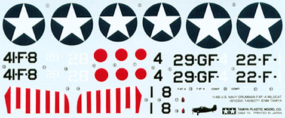
The Tamiya instruction packet is a large fold-out consisting of eight full sized panels. The cover panel contains a good historical background on the aircraft in four languages. Nine exploded view construction steps follow this along with a complete paint chart. The exploded views include lots of part name designations and color call-outs. The two more complex assembly stages centered around the cockpit and the landing gear bays seem to be very well detailed and should allow for a fairly trouble free assembly. The final two panels cover decal placement and exterior painting guides for two aircraft.
Tamiya decals have a history of being hit and miss. I have seen decals from them so thick as to be almost impossible to use and others that have disintegrated upon contact with water. I have also seen a few sets that were actually workable. The set included with this kit are not that thrilling, they do not include any propeller logos, no service stencils or warning markings. The sheet includes basic national markings and unit markings for to aircraft. The print registry and color density look okay and from what I can see on the sheet they do not appear to be overly thick or show any cracking. If you plane on using the kit decals, you will want to have a very aggressive decal softener on hand.
Accessories and Conclusions
The basics of this kit are very good, we have great plastic with excellent directions. If you are concerned, about heavy rivet detail, you can fix that but for me it looks just fine. The shortfalls of this kit are mostly in the realm of the decals � they kind of suck. Another area of concern is the pilot�s seat; it lacks all detail and should be replaced.
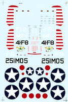
Since this kit has been on the market for a while and does provide an excellent foundation for Advanced Modeler Syndrome, there are plenty of after market items available for it. Let us talk about them in general and look at a few specific pieces that I liked for the kit. The smaller images below are linked to larger pictures so you can click on them for a better view.
Decals: There are so many aftermarket decals kicking around that it seems you could model any individual aircraft ever manufactured. Okay, that�s not true but it sure seems like it once you start looking. Aeromaster Products currently has three or four different sheets available through Internet hobby shops and several out of production sheets that can still be found at swap meets or on Internet auction sites. CAM Decals, Cutting Edge, Eagle Strike, Superscale, Techmod and Wings all offer additional choices for your construction needs. I selected an out-of-production sheet from Superscale (48-397) purchased from an auction site for about $10.00. They are Superscale decals so we already know they are nicely thin and react well to your standard setting solutions. The set gives us six historically significant aircraft to choose from. The set includes two complete sets of propeller logos; kill markings, vibrant nose art and plenty of service and warning stencils. The only thing lacking in this decal package is a good full-color painting guide. We de have a line drawing of the aircraft and paint codes but I like to have at least one full color profile to work with.
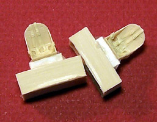
Resin Goodies: The first thing that truly needs addressing is the pilot�s seat. The base cockpit is pretty good with the exception of the solid floor pan. I feel that can be remedied by simply cutting out the panels that should not be there but you can purchase a complete aftermarket cockpit from Aires that includes the open floor and a replacement seat. You can go one step further with Aires and get the package that also includes the engine and firewall. They have a detail package for the wingfolds if you want to model this in a stowed position or you could go with an open gun bay from Aires. Cutting Edge offers several control surface resin packages as well as a �Catfish� conversion set. Moskit has an exhaust set and Teknics offers a combined resin and PE set. I selected a simple Ultracast replacement seat. The Ultracast seat has excellent detail and a fine pour stub that is easily removed. When replacing your Wildcat seat in any of the before mentioned packages pay attention to the model year of aircraft you are modeling. Any Wildcat before 1942 had lap belts only, it was not until 1942 and later that we started to see shoulder harnesses in the aircraft.
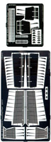
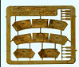
Photo Etched: Once again there are plenty of things to choose from in the PE department. Several of the resin detail packages will include some PE but I feel the base kit cockpit is not that bad. You could dress it up with some stuff from Eduard from any one of several little sets they offer or from a Parts Accessory set. I feel that the PE sets really become important working with the exterior of the aircraft. I wanted to drop the flaps and Eduard has a great PE set to do just that. The set includes two sheets of steel parts with good instructions. Some details need to be shaved from the base kit and reused on the PE replacements. The design of the flap interior structure is very good requiring plenty of bending and tacking rather than trying to locate separate parts then secure them with superglue � something I always hate doing. At one time KMC (Kendall Modeling Company) produced a set of replacement open cowl flaps for the kit. I managed to get my hands on a set and see that they will add nicely to the model. Unfortunately, the set does not include any installation instructions. If you are so lucky as to find a set you need to remove the kit cowl flaps, glue a fine piece of stock inside the cowling to form a slight lip then bend and attach the new flaps to that lip. The set also includes the hydraulic actuators but you may be better off replacing that dinky PE piece with a piece of stretched sprue.
Masks: The last aftermarket item to discuss are masks. I don�t feel the need to buy masks for this simple canopy but there are aftermarket masks for the canopy and for the wheel hubs. I think that you can see there are many, many different pieces available for this kit. Using the Tamiya kit as a foundation you really can model just about any unit aircraft in any operational position imagined. This is definitely a kit worth having in your collection, build it straight from the box or add lots of nifty resin and PE stuff but no matter what � build this kit.
9/11/05
Ever since my initial review of this kit I have been wanting to build it. I finally got a few projects off the work table as was able to start cutting some plastic on this one. As with most aircraft construction begins with the interior. I elected to not cut out the floor panels on this build and other than replacing the kit seat with the Ultra Cast resin seat it is all build straight from the box. I did use Mike Grant instrument decals for the dash. The interior pieces are all done with Model Master Interior Green with details done in black. The dash and various panels were dry brushed with silver and washed with a basic sludge wash. The cockpit tub went together like a dream � all pieces fit together just like they were supposed to and the level of detail provided by the kit keeps things looking very busy. The front of the firewall was done in flat white and the landing gear retraction chains were done with Gunze Burnt Iron. All this was followed with more of my basic wash.
Just as a refresher, my basic wash is made from about two teaspoons of tap water, a drop of liquid dish soap, a pea sized drop of Grumbacher Burnt Sienna and a few drops of Higgins water soluble black ink. I�ve listed this recipe in other reviews but in case you missed it now you don�t have to go hunting.
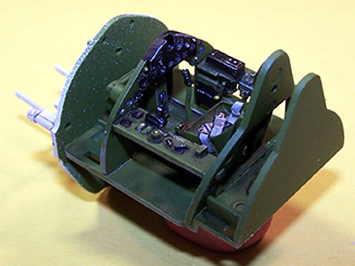 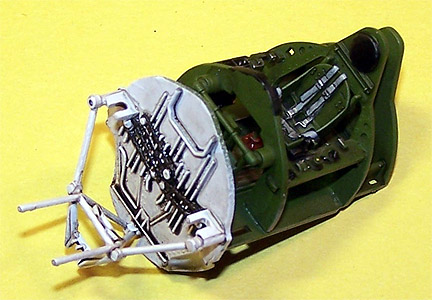
While this was drying I assembled the fuselage sides and installed the elevator and rudder. I�m going to install the Eduard dropped flaps on this bird, my basic idea is to display the aircraft just prior to launch with the flaps dropped and the cowl flaps open. The first step in this conversion is removal of the kit flaps. 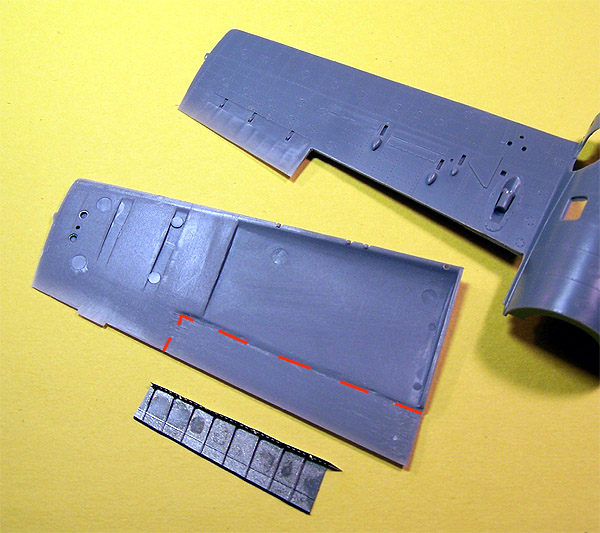
I need to save the hinge bumps that are on the bottoms of the exiting flaps so care must be taken removing these pieces. I basically traced the flap demarcation several times with a fresh Xacto knife until I was able to break them free. The pieces were placed in the box for later removal of the hinge bumps. The fresh cut edges were cleaned up with a small flat diamond file. The inner top wing surface must be thinned quite a bit in order for the new flap interior pieces to fit. I used my Dremel with a small sanding drum at the lowest possible speed to remove the largest portion of the plastic. Once again, care must be taken because the plastic heats up very quickly. I kept my finger resting on the top surface of the wing so I could monitor the temperature during the grinding process. I also would periodically hold the wing up to a light to check the thinness of the plastic. Once I had most of the heavy work completed I shifted over to a 400-grit wet sandpaper and smoothed out the area. The image to the right shows the thinned area outlined in red and the Photo etched piece that needs to fit into the wing.
I assembled the inner pieces of the Eduard kit which took a bit of time. This is just one piece of metal but there is extensive bending and fine gluing required to make it ready for installation. Several times during the sanding I would hold the wing halves together and check the fit of the Eduard pieces paying particular attention to the raised edge along the front side of the piece and it�s fit to the wing. This piece must fit flush with the wing surface. Once I was satisfied with the fit and had thinned both wings I took the lower wing section to the paint room and airbrushed the forward fuselage section white and the aft section Interior Green. Next the wing haves were glued together. The kit trailing edge is very thin so too much glue can cause a serious problem here.
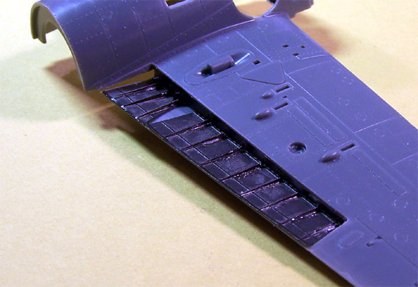
My eyes and back are about done from the PE work so I moved back to conventional construction for a while. I painted and installed the interior components of the landing gear to the front of the firewall and some kind of little radiator that mounts inside there. The cockpit tub is installed in the fuselage and the wing assembly is attached to the fuselage. The glue joints are cleaned up after being allowed to set completely and the few areas that did not come out perfectly got a little Mr. Surfacer 500 applied with a toothpick. Minor details were added like the oil cooler under the wings and the tail hook. I also started work on the remaining sections of the landing gear. Most of this is to be painted black and will be done as an assembly. So far everything is going together very well and I am impressed with the overall fit of the parts.
I think I�m ready to start working on the engine now. It�s a pretty simple piece of construction that traps a poly cap inside the gear reduction box for the propeller shaft but the level of detail is very good. The front row of cylinders has good wiring patterns and lift rod detail. The rear bank of cylinders lacks this detail which is disappointing. I checked to see if the rear bank of cylinders would be visible with the cowling in place and it is. I don�t feel like laying in new ignition wires so it�s just going to have to stay as is. The back side of the rear cylinder bank has some good equipment detail that will protrude into the landing gear bay. With the various struts from the gear, the interior radiator and the aft end of the engine this bay looks very busy.
Basic painting of the engine was done with Model Master Primer Gray for the bulkhead, Gunze Burnt Iron for the cylinder heads with a silver dry brushing, gold ignition wires and black push rods and details. Like everything else this was washed with the sludge wash when finished.
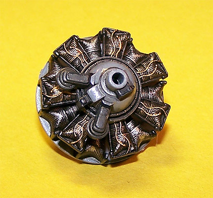 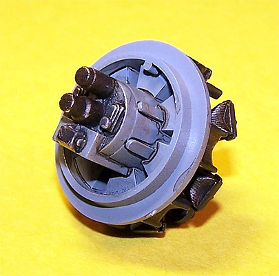
The engine assembly is glued to the front of the fuselage and I am ready to start working on the flaps again. I thought the inner sections were tough � I had no idea what tough was until I started working on the outer sections. The entire outer flap section is comprised of only three pieces but there is a lot of fitting and bending required and as each rib is fit to the two cross members a fine dab of superglue is applied � all this done looking through the Omni-Visor and at point blank range. The first flap took two hours to put together, mostly because I installed the first cross member backwards and had to take the whole blooming thing apart, clean off the glue and reassemble.
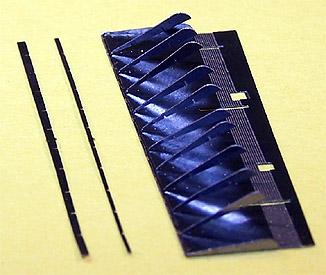 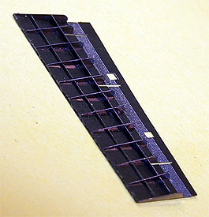 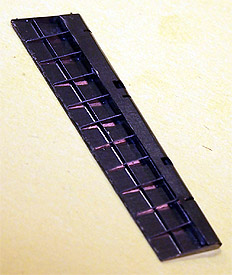
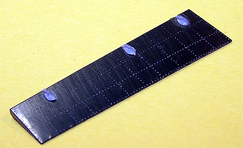
In the images above moving from left to right we have the three pieces of Photo Etch with the trailing edge of the flap already folded over causing the ribs to point to the front of the wing. For a view of the raw parts go back to the accessories section of the kit review and click on the small image of the Eduard parts. The next image shows the ribs and cross member all lined up and glued in place. The third image shows the leading edge of the flap folded over the ribs and tacked down with fine spots of superglue. And finally to the right we have the exterior side of the flap with the plastic hinge bumps shaved off the original flaps and superglued onto the new flap. There are two large flap sections and two small flap sections with a total of five hinges per side. Even after gaining some experience with these pieces the second flap took a good hour to assemble. I�m still not sure at what point I shall install these pieces into the wing. I may wait until the base model is painted, paint the flaps separately and then install them � we shall think on it for a while.
I feel like the hardest part of this build is out of the way now and am ready to tackle the KMC cowl flaps. First the kit flaps are removed using a cutting wheel on my Dremel and cleaning up the openings with a flat diamond needle file. To give new flaps something to hold onto I install a thin piece of Evergreen flat stock inside the cowling with just a slight overhang as can be seen in the first two images below. The edges of the flaps are bent 90 degrees using a wide set of tweezers and then are dry fit before glue is applied. Some very minor sanding is required and the cowl flaps are installed. I still have to add the hydraulic actuators but was able to test fit the modified cowling � wow, it really makes a difference in the look of the model. It�s too bad that KMC went out of business because this little conversion kit is easy to install and makes a marked difference in the model. Maybe some other aftermarket company will pick up this idea and put it back on the market.
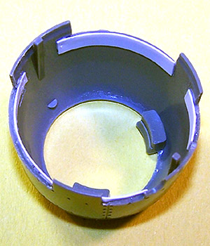 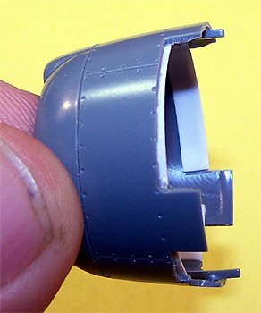 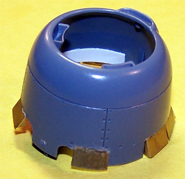
Now the interior of the cowling gets painted flat white and I will think about just how I want to install the actuators. KMC does not provide any instructions in the use of their package but I have spoken to another modeler who used this same set. He told me that he discarded the Photo Etched actuators and made replacements from thin stock plastic rod. I will do some experimentation and see what I like better.
9/15/05
I have been working on this model for five days now. I am not trying to hurry this build and only spend about two or three hours per day other than most of the first day was spent on it. Everything you�ve seen up to now was accomplished in one day � Sunday. Monday the model headed for the paint room and was primed with Mr. Surfacer 1200 cut 50% with lacquer thinner. A few minor problems showed up and were dealt with quickly like a seam glitch right in front of the cockpit and some glue boogers on an aileron. Tuesday the model headed back to the paint room and was pre-shaded (first picture at left below) with Ceramcoat Burnt Sienna thinned a lot with Isopropyl Alcohol and some Liquitex Flow Aid. I did this with my air pressure cut down to about 6psi and at very close range making multiple passes until the color density was where I wanted it.
Not so long ago someone said to me that they could not do the pre-shading because they did not have a steady enough hand. I don�t think that having a steady hand is particularly important to this process, in fact I think a shaky hand could actually be a benefit. These pre-shaded lines should not be rail straight, we�re trying to duplicate the somewhat random effects of weathering here and that rarely happens in straight lines. Those are my thoughts on the subject.
Wednesday after work the Wildcat heads back to the paint room and the lower surfaces are painted. I mixed my own Light Ghost Gray using Tamiya Sky Gray and Ceramcoat White in equal parts thinned with Isopropyl Alcohol and Liquitex Flow Aid. With air pressure set at about 10psi and at about 2 to 3 inches in range I filled in the central areas of the darkened lines then backed off the range and lightly misted the surface until I liked the look of the panel lines (second picture below left). I cut some masks from standard masking tape and applied them to the fuselage after the paint had a few hours to dry.
Thursday after work I head for the paint room once again. Today we are putting the light Navy Blue/Gray on. This is another one of my mixtures using Polly Scale Medium blue, Ceramcoat Flat White and Tamiya Sky Gray mixed 3 parts blue to 2 parts white and � part Sky Gray. As with the Light Gull Gray this was thinned with Alcohol and Flow Aid. The painting process was the same as before filling in the central areas then misting the model to fade the dark lines. Once this step had been completed I immediately added some additional white to a batch of the Blue/Gray and thinned the mixture down even more. I went over the central panel areas with a light mist to create a sun faded look making sure that the most upper surfaces got a heavier coat. The masks were removed and the landing gear was installed (two pictures below right).
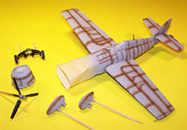
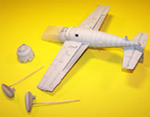
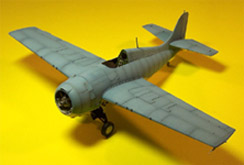
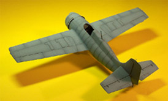
You may click on the images above to view larger pictures
I�ll let all this stuff dry for a day or so and turn my attention to painting the flaps next.
9/22/05
Now that the primary paint job is complete I�ll start putting the flaps in place. First they are primed with Mr. Surfacer 1200 cut with lacquer thinner then the interior surfaces are done with Model Master Interior Green thinned with lacquer thinner. The exterior surfaces are painted with the Light Ghost Gray that I had mixed earlier. The inner pieces were test fit to the wing and even though I had done this prior to assembling the wing I did it again and good thing.
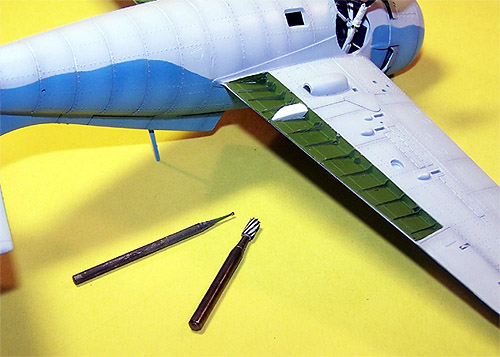
When I glued the wing together and later attached it to the fuselage it had compressed slightly and now the flap does not fit flush to the lower surface. This does not make me happy at all. I have to thin the wing material and am very concerned about screwing up my nice paint job. I�m using a combination of a barrel burr bit and a very small round burr bit to work the surface. I just skim the bit over the inner area several times taking off very little plastic with each pass and trade Dremel time with the small bit to keep the corners equal and the inner edge where the large bit does not quite reach. After about fifteen minutes of careful work the flap fits flush with the lower wing surface. Guess what � the other side has the same issue, yippee!
The inner surface of the wing is coated with a thin layer of medium superglue then the flap piece is pressed into place. A quick spot of accelerator and I can move to the second piece. The opposite wing is thinned and that flap is installed. The Eduard directions call for a piece of plastic stock to be custom made by the modeler to fit a small space between the two inner flap pieces and that little project takes about an hour. You can see the white piece in the picture to the right � that�s my little custom made piece. As I moved into the next step to install the lower sections of the flaps I discovered that the hour spent making these two little pieces was an exercise in futility.
I test fit the large outer panels and find them to be a nearly perfect fit. A little dab of superglue goes onto each actuator stub and the flap is mounted.
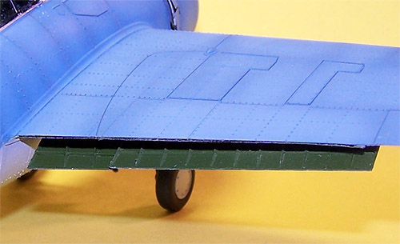
Some accelerator is used to hurry up the cure time and I test fit the small inner section. Here is where I learn all about futile scratch building � that little freaking piece I made exactly to Eduard�s specifications causes the flap to not fit and from looking at the overall construction of the flaps makes no sense whatsoever, grrrr. Fortunately the Dremel bits have not been put away yet so the drum burr bit is used to grind down the innermost portion of the little custom piece until the flap fits. I still do not see the logic or mechanic of what that thing is supposed to do other than annoy me. No matter, the landing flaps are installed and look good to me.
So the cowling has only been pressed over the engine for test fitting and to determine the color demarcation line because the cowl flap actuators have yet to be installed. I have spoke to other modelers who have used the KMC set and they discarded the PE actuators and replaced them with fine pieces of plastic rod. I considered this approach but figured I should at least give the kit parts a chance before throwing them into the PE spares box (never throw anything away). I left the lower sections of the actuators brass and painted the arm itself silver then tried installing one into the cowling removed from the model. Basically all I did was put a small spot of superglue on the business end of the actuator and stick it to the mounting point inside the cowl with the tail end angled toward the engine.
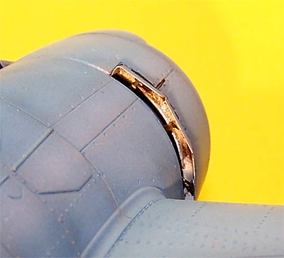
I just left that end hanging and installed all eight actuators. They gave me no trouble going on and once I slide the cowl over the engine they looked pretty good. I could not tell that the inside end was just hanging free and the overall appearance was good. Unfortunately the picture does not do it justice. I wicked some Tenex &r into the cowl seam and this part of the construction is complete.
We are in the final stretch here folks. The date of this update is not the date this was completed. I am at the point of putting Future on this model and applying decals just seven days after beginning this project � is that incredible or what? The Future is cut with some Isopropyl Alcohol (that�s rubbing alcohol) to prevent the dreaded orange peel effect and then she is allowed to cure for a few hours. Decals are going on next and these are the Aero Master decals shown at the beginning of this feature. For the most part these go on very nice other than the two large stars on the fuselage gave me a terrible time lying down. I started with some Micro-Sol setting solution then shifted to Mr. Marker Soft (it�s a bit stronger) and still had to use that four times before I gave up. I�m still not entirely happy with those bloody stars. All right, the decals dried for a few hours and later in the evening I started the wash using my standard sludge was hitting every panel line and both raised and recessed rivets. This dried for a few minutes and was wiped off with a slightly damp pressed paper towel.
Moving into the next day, day eight, the canopy is masked (I dipped it in Future a few days ago) then shot with interior green followed by light Navy blue/gray. Back to the model I go and attach all the aerials using invisible thread drawn across a black permanent marker. All aerials are attached with fine spots of superglue and various insulators are made from more superglue fast set with accelerator and painted flat white. Next the drop tanks are glued in place and the model heads to the paint room for a coat of Polly Scale clear flat cut with Windex. This stuff dries in about twenty minutes which was used to remove the masks from the canopy and paint the gun sight frame flat black. Once the model was back on the work table the interior of the landing lights were painted silver and fine black studs were painted inside the clear lenses � these were installed into the wing with Testors Clear Parts Cement as was the canopy and gun sight. The last step was some ground pastel chalk applied with an eye-shadow swab acquired from the make-up aisle of the local convenience store (these things are great). I used some black and gray mixed chalk for the gun blast stains and burnt sienna for the exhaust stains. I went around some of the panel edges with a sharpened silver artist's pencil and created a little paint chipping as well as along the leading edge of the propeller blades and around the walkway to the cockpit. And there you have it � eight days from start to finish and I really was not trying to set any records, this model almost builds itself and if I had not made the modifications that I did I probably would have been done is six days. When people talk about a shake-n-bake kit they are talking about this kit.
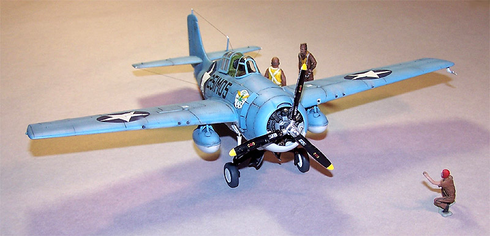
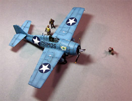
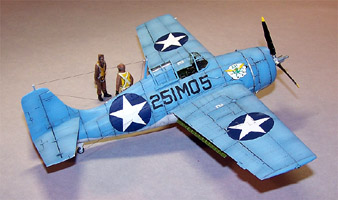
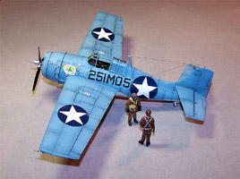
You may click on the small images to view larger pictures
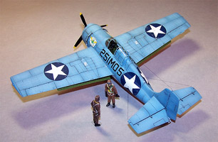
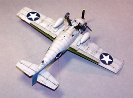